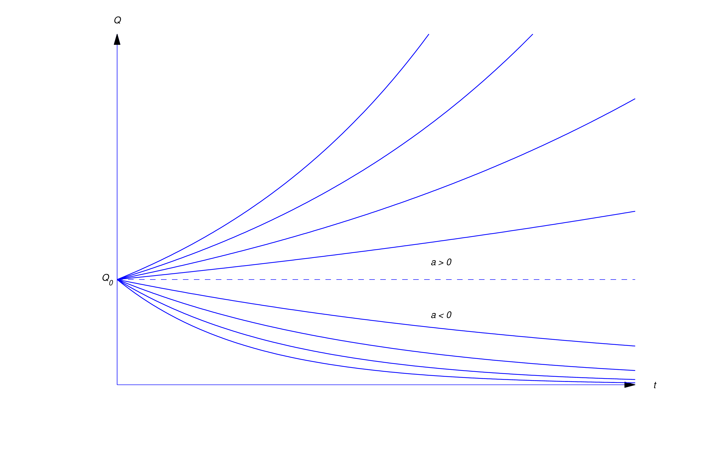
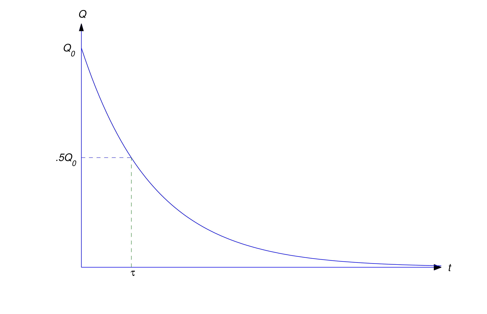
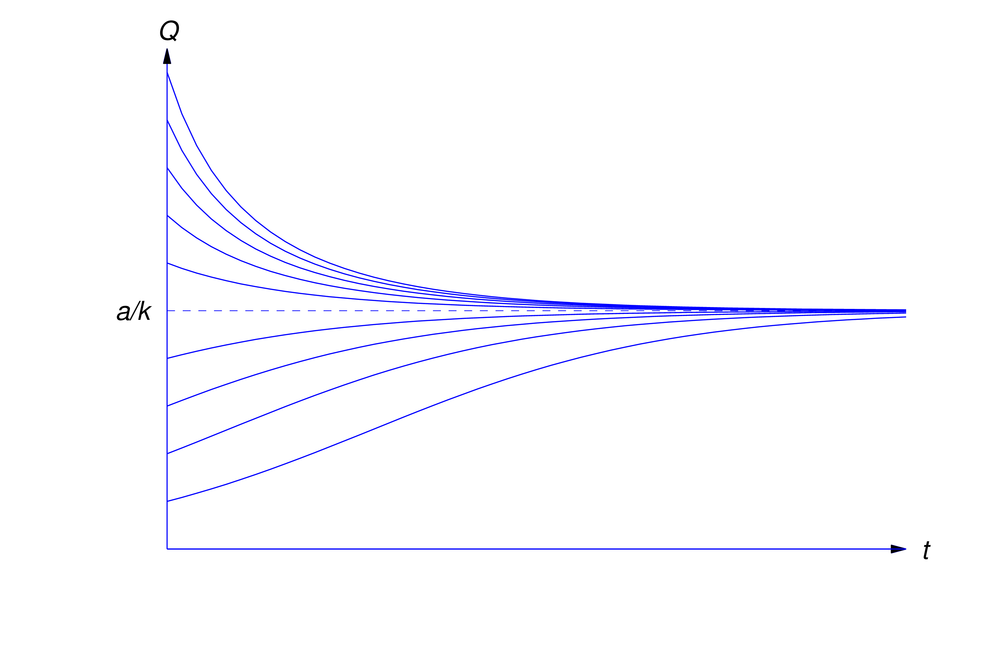

Since the applications in this section deal with functions of time, we'll denote the independent variable by \(t\). We'll be using dot notation (Newton notation) where if \( Q=Q(t) \) is a function of time \(t\), \(\dot{Q}\) will denote the derivative of \(Q\) with respect to \(t\) time:
\[ \dot{Q}={dQ\over dt}\]
One of the most common mathematical models for a physical process is the
exponential model, where it is assumed that the rate of change of a quantity \(Q\) over time is proportional to that quantity \(Q\). Using \(a\) as the constant of proportionality we obtain the differential equation:
\begin{equation} \label{eq:4.1.1}
\dot{Q} = aQ
\end{equation}
which you may recognize if you replace \( y \) with \(Q\) from Example 2.1.3
Assuming \( Q \ne 0\), we can find the general solution of (4.1.1) by separation of variables
\begin{align*}
\frac{dQ}{dt} = aQ \Longrightarrow
\frac{1}{Q} \cdot \frac{dQ}{dt} = & a \\
\int \left( \frac{1}{Q} \cdot \frac{dQ}{dt} \right) dt = & \int a \, dt \\
\int \frac{1}{Q} dQ = & a \int dt \\
\ln \left| Q \right| = & at + c \\
e^{\ln \left| Q \right| } = & e^{at + c} \\
\left| Q \right| = & c e^{at} \Longrightarrow
Q = c e^{at}
\end{align*}
Explain how \( \left| Q \right| \) simplified to \( Q \)
Explain how \( e^{at + c} \) simplified to \( c e^{at} \)
Verify \( Q = c e^{at} \) is a solution to (4.1.1)
We can rewrite (4.1.1) as an IVP by including an initial condition:
\begin{equation*}
\dot{Q} = aQ \quad Q(t_0)=Q_0
\end{equation*}
Evaluate \( Q = c e^{at} \) at the initial condition \( Q(t_0)=Q_0 \) and solve for \( c \)
Substitute \( c \) in to \( Q = c e^{at} \) to obtain a particular solution of the IVP
Then applying the initial condition, we can find \( c\) and get a particular solution.
\begin {equation} \label {eq:4.1.2}
Q=Q_0e^{a(t-t_0)}
\end {equation}
Since the solutions of \(\dot{Q}=aQ\) (4.1.1) are exponential functions, we say that a quantity \(Q\) that satisfies this equation grows exponentially if \(a > 0\), or decays exponentially if \(a < 0\) (Figure 4.1.1).

Figure 4.1.1 Exponential growth and decayRadioactive Decay
Experimental evidence shows that it radioactive material decays at a rate proportional to the mass of the material present. According to this model the mass \(Q(t)\) of a radioactive material present at time \(t\) satisfies the exponential model of (4.1.1), where the constant of proportionality \(a\) in this case is a negative constant whose value for any given material must be determined by experimental observation. For mathematical simplicity, we'll replace the negative constant \(a\) by \(-k\), where \(k\) is a positive number that we'll call the decay constant of the material. Thus, (4.1.1) becomes
\begin{equation*}
\dot{Q} = -kQ
\end{equation*}
If \(Q_0\) represents the mass of the material present at time \(t=t_0\)
then the mass present at any time \(t\) is the solution of the IVP
\[
\dot{Q}=-kQ \quad Q(t_0)=Q_0
\]
Replacing \(a\) with \(-k\) in (4.1.2) with \(a=-k\) we have the solution of IVP
\begin{equation} \label{eq:4.1.3}
Q(t) = Q_0e^{-k(t-t_0)}
\end{equation}
The half–life of a radioactive material is defined to be the time required for half of its mass to decay.
\(Q_0\) represents the initial mass of the quantity and \(Q(t)\) represents the mass of the quantity at time \(t\), so when the mass has decayed to half the initial value, that is to \(\frac{1}{2}Q_0\), then the time that it takes is called the half–life. Taking the initial time \(t_0\) as zero, and replacing \(Q(t)\) with \(\frac{1}{2}Q_0\) in (4.1.3) we can solve for the half life:
\begin{align}
Q(t) = & Q_0e^{-k(t-t_0)} \nonumber \\
\frac{1}{2}Q_0 = & Q_0e^{-k(t-0)} \nonumber \\
\frac{1}{2}Q_0 = & Q_0e^{-kt} \label{eq:4.1.4}\\
\frac{1}{2} = & e^{-kt} \nonumber \\
\ln \left( 2^{-1}\right) = & \ln \left( e^{-kt} \right) \nonumber \\
-1 \ln 2 = & -kt \ln e \nonumber \\
\ln 2 = & kt \nonumber \\
t = & \frac{1}{k} \ln 2 \label{eq:4.1.5}
\end{align}
The equation for half-life (4.1.5) is only dependent on the decay constant of the material. It is worth noting that the initial quantity of the material \(Q_0\), or the amount at any time in the decay process does not impact the half life.
Evaluate (4.1.3) at \( t = \frac{1}{k} \ln 2 \) and \( t_0 = 0\) to verify

Figure 4.1.2 Half-life of a radioactive substance
A radioactive substance has a half-life of 1620 years. If its mass is now 4 g (grams), how much will be left 810 years from now? Find the time when 1.5 g of the substance remain.
Set up and solve an IVP using the exponential decay model
Calculate the decay constant and substitute it in to the particular solution to the IVP
Use the result from (Part 2) to solve the original problem
Solution
An IVP must have a differential equation and an initial condition. The differential equation matches the familiar exponential model, where the rate of change of a quantity \(Q\) over time is proportional to that quantity \(Q\) and we'll use \(-k\) as the constant of proportionality with \( k\) representing positive values. The initial condition is given in the problem statement when it states that the mass is initially 4 grams, so in other words we take the initial amount at time \(t=0\) to be 4 grams, so we obtain the IVP:
\begin{align*}
\dot{Q}=-kQ \quad Q(0)=4
\end{align*}
Now we can solve using separation of variables:
\begin{align}
\dot{Q} = & -kQ \quad\quad\quad Q(0)=4 \nonumber \\
\frac{dQ}{dt} = & -kQ \nonumber \\
\frac{1}{Q} \cdot \frac{dQ}{dt} = & -k \nonumber \\
\int \left( \frac{1}{Q} \cdot\frac{dQ}{dt} \right) dt = & \int -k \, dt \nonumber \\
\int \frac{1}{Q} dQ = & -k \int dt \nonumber \\
\ln \left| Q \right| = & -kt + c \nonumber \\
e^{\ln \left| Q \right| } = & e^{-kt + c} \nonumber \\
\left| Q \right| = & c e^{-kt} \nonumber \\
Q(t) = & c e^{-kt} \quad\quad\quad Q(0)=4 \nonumber \\
Q(0) = & c e^{-k(0)} \nonumber \\
4 = & c e^{0} \Longrightarrow c = 4 \nonumber \\
Q(t) = & 4 e^{-kt} \label{eq:4.1.6}
\end{align}
We can use the half-life of 1620 years to calculate the decay constant. Since the initial mass of the substance is 4 grams, then it will take 1620 years to decay to 2 grams, i.e. \(Q(1620)=2\):
\begin{align*}
Q(t) = & 4 e^{-kt} \quad\quad\quad Q(1620)=2 \\
\underset{2}{\underbrace{Q(1620)}} = & 4 e^{-k(1620)} \\
2 = & 4 e^{-1620k} \\
\frac{2}{4} = & e^{-1620k} \\
\frac{1}{2} = & e^{-1620k} \\
\ln \left( 2^{-1} \right) = & \ln e^{-1620k} \\
-\ln \left( 2 \right) = & -1620k \ln e \\
\ln \left( 2 \right) = & 1620k \\
k = & \frac{1}{1620}\ln \left( 2 \right) \approx 0.0004278 \\
\end{align*}
It's nice to know what the decimal approximation is to get an idea of the number but we substitute our exact decay constant into the solution (4.1.6) of our IVP
\begin{align} \label{eq:4.1.7}
Q(t) = & 4 e^{-kt} \nonumber \\
Q(t) = & 4 e^{-{(t\ln 2)}/{1620} }
\end{align}
The original problem asked us to find out how much material will be left in 810 years, i.e. find \(Q(810)\) using (4.1.7)
\begin{align*}
Q(t) = & 4 e^{-{(t\ln 2)}/{1620} } \\
Q(810) = & 4 e^{-\frac{810\ln 2}{1620} } \\
= & 4 e^{- \frac{1}{2} \ln 2} \\
= & 4 e^{ \ln (2)^{- \frac{1}{2} } } \\
= & 4 (2)^{- \frac{1}{2} } \\
= & 4 \left(\frac{1}{2} \right)^{\frac{1}{2} } \\
= & \frac{4}{ \sqrt{2} } \left( \frac{\sqrt{2}}{\sqrt{2}} \right) \\
= & \frac{4\sqrt{2}}{ 2 } = 2 \sqrt{2} \approx 2.828 \quad \text{grams} \\
\end{align*}
So we found the amount left after 810 years to be \(2 \sqrt{2} \approx 2.828\) grams. We also want to find the time when 1.5 g remain, so we substitute 1.5 for \(Q(t)\) and solve for \(t\)
\begin{align*}
Q(t) = & 4 e^{-{(t\ln 2)}/{1620} } \\
1.5 = & 4 e^{-{(t\ln 2)}/{1620} } \\
\frac{1.5}{4} = & e^{-{(t\ln 2)}/{1620} } \\
\ln \left( \frac{15}{40} \right) = & \ln e^{-{(t\ln 2)}/{1620} } \\
\ln \left( \frac{15/5}{40/5} \right) = & - \frac{t\ln 2}{1620} \\
-1620 \ln \left( \frac{3}{8} \right) = & t\ln 2 \\
1620 \ln \left( \frac{3}{8} \right)^{-1} = & t\ln 2 \\
t = & 1620 \frac{\ln \left( \frac{8}{3} \right) }{\ln 2} \approx 2292 \quad \text{years}
\end{align*}
So in about 2292 years is when there will be 1.5 grams remaining.
Evaluate \( Q(2292)\) using (4.1.7) and find out if it agrees with our answer
Interest Compounded Continuously
Suppose we deposit an amount of money \(Q_0\) in an interest-bearing
account and make no further deposits or withdrawals for \(t\) years,
during which the account bears interest at a constant annual rate \(r\).
To calculate the value of the account at the end of \(t\) years, we need
one more piece of information: how the interest is added to the account,
or—as the bankers say—how it is compounded.
If the interest is compounded annually, the value of the account is
multiplied by \(1+r\) at the end of each year. This means that after \(t\)
years the value of the account is
\[ Q(t)=Q_0(1+r)^t\]
If interest is compounded semiannually, the value of the account is multiplied by
\((1+r/2)\) every 6 months. Since this occurs twice annually, the value of
the account after \(t\) years is
\[ Q(t)=Q_0\left (1+{r\over 2}\right)^{2t}\]
If interest is compounded quarterly, the value of the account is multiplied by
\((1+r/4)\) every 3 months. Since this occurs four times annually, the value of
the account after \(t\) years is
\[ Q(t)=Q_0\left (1+{r\over 4}\right)^{4t}\]
If interest is compounded monthly, the value of the account is multiplied by
\((1+r/12)\) every month. Since this occurs twelve times annually, the value of
the account after \(t\) years is
\[ Q(t)=Q_0\left (1+{r\over 12}\right)^{12t}\]
Write a formula for the value of the account with weekly compounding
If interest is compounded daily, the value of the account is multiplied by
\((1+r/365)\) every month. Since this occurs 365 times annually, the value of
the account after \(t\) years is
\[ Q(t)=Q_0\left (1+{r\over 365}\right)^{365t}\]
In general, if interest is compounded \(n\) times per year, the
value of the account is multiplied \(n\) times per year by \((1+r/n)\);
therefore, the value of the account after \(t\) years is
\begin {equation} \label {eq:4.1.8}
Q(t)=Q_0\left (1+{r\over n}\right )^{nt}
\end {equation}
Thus, increasing the frequency of compounding increases the value of the
account after a fixed period of time.
Table 4.1.1
shows the effect of increasing the number of compoundings over \(t=5\)
years on an initial deposit of \(Q_0=\$100\) at an annual
interest rate of 6%.
Table 4.1.1 shows that the value of the account after 5
years is an increasing function of \(n\). Now suppose the maximum
allowable rate of interest on savings accounts is restricted by law,
but the time intervals between successive compoundings isn't. Then
competing banks can attract savers by compounding often. The ultimate
step in this direction is to compound continuously, by which we
mean we let the number of compoundings \(n \) approach infinity in (4.1.8)
Calculating the limit of (4.1.8) as \(n\to \infty \)
\begin{align*}
Q(t) = & Q_0\left(1+{r\over n}\right)^{nt} \\
\lim_{n \to \infty} Q(t) = & Q_0 \lim_{t \to \infty} \left(1+{r\over n}\right)^{nt} \\
= & Q_0 \lim_{n \to \infty} e^{\ln \left(\left(1+{r\over n}\right)^{nt} \right) } \\
= & Q_0 e^{\displaystyle \lim_{n \to \infty} \left( nt \cdot \ln \left(1+{r\over n}\right) \right) } \\
= & Q_0 e^{t \displaystyle \lim_{n \to \infty} \left( \frac{ \ln \left({n+r\over n}\right) } {1/n} \right) } \\
= & Q_0 e^{t \displaystyle \lim_{n \to \infty} \left( \frac{ \frac{d}{dn} \ln \left({n+r\over n}\right) } {\frac{d}{dn}n^{-1} } \right) } \\
= & Q_0 e^{t \displaystyle \lim_{n \to \infty} \left( \frac{ {n\over n+r} \left( -rn^{-2} \right) } { -n^{-2} } \right) } \\
= & Q_0 e^{t \displaystyle \lim_{n \to \infty} {rn\over n+r} } \\
= & Q_0 e^{rt \displaystyle \lim_{n \to \infty} {{n}/{n}\over {n}/{n}+{r}/{n}} } \\
= & Q_0 e^{rt \displaystyle \lim_{n \to \infty} {1\over 1+{r}/{n}} } \\
= & Q_0 e^{rt}
\end{align*}
It is interesting to note that with continuous compounding, \(Q(t)=Q_0e^{rt}\) which is exactly the solution to the IVP
\(
\dot{Q}=rQ \quad Q(0)=Q_0
\)
This means that the value of the account grows exponentially with continuous compounding
Verify \(Q(t)=Q_0e^{rt}\) is a solution of \( \dot{Q}=rQ \quad Q(0)=Q_0 \)
Suppose \$150 is deposited in a bank that pays \(5{1\over2}\)% annual interest compounded continuously. Find the value of the account after 10 years. How long will it take until the account is worth \$500?
Set up and solve an IVP using the exponential decay model
Use the result from (Part 1) to solve the original problem
Solution
An IVP must have a differential equation and an initial condition. The differential equation matches the familiar exponential model, with the interest rate \(5{1\over2}\)%\(=0.055 = \frac{55}{1000} = \frac{11}{200}\) as the constant of proportionality. The initial condition is given in the problem statement when it states that $150 is deposited in a bank so in other words we take the initial amount at time \(t=0\) to be $150, so we obtain the IVP
\begin{align*}
\dot{Q} = \frac{11}{200} \, Q \quad Q(0)=\$150
\end{align*}
Now we can solve using separation of variables:
\begin{align}
\dot{Q} = & \frac{11}{200} Q \quad\quad\quad Q(0)=\$150 \nonumber \\
\frac{dQ}{dt} = & \frac{11}{200} Q \nonumber \\
\frac{1}{Q} \frac{dQ}{dt} = & \frac{11}{200} \nonumber \\
\int \left( \frac{1}{Q} \frac{dQ}{dt} \right) dt = & \int \frac{11}{200} \, dt \nonumber \\
\int \frac{1}{Q} dQ = & \frac{11}{200} \int dt \nonumber \\
\ln \left| Q \right| = & \frac{11}{200}t + c \nonumber \\
e^{\ln \left| Q \right| } = & e^{\frac{11}{200}t + c} \nonumber \\
\left| Q \right| = & c e^{\frac{11}{200}t} \nonumber \\
Q(t) = & c e^{\frac{11}{200}t} \quad\quad\quad Q(0)=4 \nonumber \\
Q(0) = & c e^{\frac{11}{200}(0)} \nonumber \\
\$150 = & c e^{0} \Longrightarrow c = \$150 \nonumber \\
Q(t) = & \$150 e^{\frac{11}{200}t} \label{eq:4.1.9}
\end{align}
We are using a fraction as our interest rate here to emphasize exact values, however, it is common to express the interest rate as an exact decimal \(\frac{11}{200} = 0.055\) so we could express (4.1.9) as
\begin{align*}
Q(t) = & \$150 e^{0.055t}
\end{align*}
Verify \(Q(t) = \$150 e^{0.055t}\) is a solution of \( \dot{Q} = \frac{11}{200} \, Q \)
We want to find out how much money will be in the account after 10 years, i.e. find \(Q(10)\)
\begin{align*}
Q(t) = & \$150 e^{\frac{11}{200}t} \\
Q(10) = & \$150 e^{\left(\frac{11}{200}\right)10} \\
= & \$150 e^{\frac{11}{200}} \\
= & \$150 e^{0.55} \approx \$ 259.99 \\
\end{align*}
We found the value of the account after 10 years to be \$ 259.99 but we also want to know how long will it take until the account is worth \$500 so we substitute \$500 for \(Q(t)\) and solve for \(t\)
\begin{align*}
Q(t) = & \$150 e^{\frac{11}{200}t} \\
\$500 = & \$150 e^{\frac{11}{200}t} \\
\frac{\$500}{\$150} = & e^{\frac{11}{200}t} \\
\frac{50/5}{15/5} = & e^{\frac{11}{200}t} \\
\ln \left( \frac{10}{3} \right) = & \ln e^{\frac{11}{200}t} \\
\ln \left( \frac{10}{3} \right) = & \frac{11}{200}t \\
t = & \frac{200}{11} \ln \left( \frac{10}{3} \right) \approx 21.89 \quad \text{years} \\
\end{align*}
So it will take about 22 years for the account to grow to \$500.
Evaluate \( Q(22)\) using (4.1.9) and find out if it agrees with our answer
We wish to have an account worth \$10,000 in 10 years by making a single deposit
in a savings account bearing \(5{1\over2}\)% annual interest
compounded continuously. How much must we deposit in the account?
Set up and solve an IVP using the exponential growth model
Use the result from (Part 1) to solve the original problem
Solution
The value of the account at time \(t\) is
Since we want \(Q(10)\) to be $10,000, the initial deposit \(Q_0\) must
obtained by setting \(t=10\) and \(Q(10)=10000\) in (4.1.9). Solving for \(Q_0\) yields \[ Q_0=10000e^{-.55} \approx \$5769.50\]
Again an IVP must always have both a differential equation and an initial condition. And again the differential equation matches the familiar exponential model, with the interest rate \(5{1\over2}\)% which can be written as \(0.055 = \frac{11}{200}\) as the constant of proportionality. Although the initial value of the account is not given, and in fact, is what we want to find, but an IVP requires an initial condition so we will set the initial value of the account at time \(t=0\) as \(Q_0\) for the initial value, which is what we are ultimately solving for.
\begin{align*}
\dot{Q} = \frac{11}{200} \, Q \quad Q(0)=Q_0
\end{align*}
Solve the IVP \( \dot{Q} = \frac{11}{200} \, Q \quad Q(0)=Q_0 \) using separation of variables
After using separation of variables, we obtain
\begin{align}
Q(t) = & Q_0 e^{\frac{11}{200}t} \label{eq:4.1.10}
\end{align}
Verify (4.1.10) is a solution of \( \dot{Q} = \frac{11}{200} \, Q \)
Verify \(Q(t) = \$150 e^{0.055t}\) is a solution of \( \dot{Q} = \frac{11}{200} \, Q \)
We are given that we want to have an account worth \$10000 in 10 years, so we substitute time \(t=10\) and quantity after 10 years \(Q(10)\) as \$10,000 and then we can solve for \(Q_0\), the initial value of the account, which is the amount we must deposit:
\begin{align*}
Q(t) = & Q_0 e^{\frac{11}{200}t} \nonumber \\
\underset{$10,000 }{\underbrace{Q(10)}} = & Q_0 e^{\frac{11}{200}10} \nonumber \\
\$10,000 = & Q_0 e^{\frac{11}{200}} \\
Q_0 = & \$10,000e^{-\frac{11}{200}} \approx \$5769.50 \nonumber
\end{align*}
Meaning we must deposit \$5769.50 initially in order for the account to be worth \$10000 in 10 years.
Evaluate \( Q(10)\) with \( Q_0 = $5769.50 \) using (4.1.10) and find out if it agrees with our answer
Mixed Growth and Decay
A radioactive substance decays at a rate proportional to the mass of the material present and satisfies the the exponential model with decay constant \(k\) but the substance is simultaneously being produced at a constant rate of \(a\) units of mass per unit time. Find the steady state value of the substance, i.e., when it levels off to a horizontal asymptote in the limit to infinity.
Set up and solve an IVP using the exponential growth model
Use the result from (Part 1) to solve the original problem
Solution
There are two competing rates here: the rate of decay is decreasing the quantity of the substance and the rate of production is increasing the quantity of the substance. Our differential equation must account for both of these rates. The rate of decrease is the familiar exponential decay rate which is proportional to the substance so \(-kQ\) and the rate of increase is constant \(a\)
\begin{align*}
\dot{Q} = & \mbox{ rate of increase of } Q - \mbox{ rate of decrease of } Q \\
\dot{Q} = & \quad\quad\quad\quad a \quad\quad\quad\quad - \quad\quad\quad\quad kQ \\ \\
\dot{Q} = & a - kQ
\end{align*}
Rewriting our differential equation in the standard form (2.1.4) and including an initial condition yields our IVP
\begin{equation} \label{eq:4.1.11}
\dot{Q} + kQ = a \quad Q(0) = Q_0
\end{equation}
Recall we can solve first order linear nonhomogenous differential equations using the complementary equation followed by variation of parameters so we start with solving the complementary equation
\begin{align*}
\frac{dQ}{dt} + kQ = & 0 \\
\frac{dQ}{dt} = & -kQ \\
\frac{1}{Q} \cdot \frac{dQ}{dt} = & -k \\
\int \left( \frac{1}{Q} \cdot \frac{dQ}{dt} \right) dt = & \int \Big( -k \Big) dt \\
\int \frac{1}{Q} dQ = & -k \int dt \\
\ln \left| Q \right| = & -kt + c \\
e^{\ln \left| Q \right|} = & e^{-kt + c} \\
\left| Q \right| = & ce^{-kt} \\
Q = & ce^{-kt} \\
\end{align*}
Choosing a simple particular solution \( Q_1=e^{-kt} \) we use variation of parameters to find solutions of the form \( Q=uQ_1=u \cdot e^{-kt}\) where \(u=u(t)\) is some function of \(t\) to be determined
Differentiate \( u \cdot e^{-kt} \) with respect to \( t \) using the product and chain rules
Then substituting into the nonhomogeneous (4.1.11)
\begin{align*}
\frac{dQ}{dt} + kQ = & a \\
\Big(\frac{du}{dt} - k u \Big) e^{-kt} + k \Big(ue^{-kt} \Big)= & a \\
\frac{du}{dt}e^{-kt} - k u e^{-kt} + kue^{-kt}= & a \\
\frac{du}{dt} = & a e^{kt} \\
\int du = & a \int e^{kt} dt \\
\int du = & \frac{a}{k} \int e^{\overset{v}{\overbrace{kt}}} \overset{dv}{\overbrace{(k dt)}} \\
\int du = & \frac{a}{k} \int e^{v} dv \\
u = & \frac{a}{k} e^{v} + c \\
u = & \frac{a}{k} e^{kt} + c \\
ue^{-kt} = & \left( \frac{a}{k} e^{kt} + c \right) e^{-kt} \\
Q = & \frac{a}{k} e^{kt}e^{-kt} + ce^{-kt} \\
Q = & \frac{a}{k} + ce^{-kt} \\
\end{align*}
Verify \(Q = \frac{a}{k} + ce^{-kt}\) is a solution of \( \frac{dQ}{dt} + kQ = a\)
Evaluate \(Q = \frac{a}{k} + ce^{-kt}\) at the initial condition \(Q(0)=Q_0\) and solve for \(c\)
Applying the initial condition \(Q(0)=Q_0\) and solving for \(c\) yields
\begin{align*}
Q(0) = & \frac{a}{k} + ce^{-k(0)}\
\Longrightarrow
c = Q_0 - \frac{a}{k} \\
\end{align*}
Therefore we have the solution to the IVP, which we will rearrange a bit to make it more clear where each part of the solution comes from
\begin{align} \label{eq:4.1.12}
Q = & {a\over k}+\left(Q_0-{a\over k}\right)e^{-kt} \\
Q = & {a\over k} + Q_0e^{-kt} - {a\over k}e^{-kt} \nonumber \\
Q = & {a\over k} - {a\over k}e^{-kt} + Q_0e^{-kt} \nonumber \\
Q = & \underset{\text{increase of $Q$}}{\underbrace{{a\over k}\left(1 - e^{-kt}\right)}} + \underset{\text{decrease of $Q$}}{\underbrace{Q_0e^{-kt}}} \nonumber
\end{align}
Verify (4.1.12) is a solution of \( \frac{dQ}{dt} + kQ = a\)
We wish to find the steady state value of the substance, i.e., when it levels off to a horizontal asymptote in the limit to infinity:
\begin{align*}
Q = & {a\over k}\left(1 - e^{-kt}\right) + Q_0e^{-kt} \\
\lim_{t \to \infty} Q
= & \lim_{t \to \infty} \Bigg( {a\over k}\left(1 - e^{-kt}\right) + Q_0e^{-kt} \Bigg) \\
= & {a\over k}\left(1 - \lim_{t \to \infty}e^{-kt}\right) + Q_0\lim_{t \to \infty}e^{-kt} \\
= & {a\over k}\left(1 - e^{-\infty}\right) + Q_0 e^{-\infty} \\
= & {a\over k}\left(1 - 0\right) + Q_0 \cdot 0 \\
= & \frac{a}{k} \\
\end{align*}
This steady state only on \( a \) and \( k\) and not on \(Q_0\).
We call \(a/k\) is the steady state value of \(Q\).
From (4.1.12) \(Q\) approaches its steady state value
from above if \(Q_0 > a/k\), or from below if \(Q_0 < a/k\). If \(Q_0=a/k\),
then \(Q\) remains constant.

Figure 4.1.3
\(Q(t)\) approaches the steady state value \(\displaystyle {a\over
k}\) as \(t\to \infty \)
Carbon Dating
The fact that \(Q\) approaches a steady state value in the situation discussed in Example 4 underlies the method of carbon dating, devised by the American chemist and Nobel Prize Winner W.S. Libby.
Carbon-12 is stable, but carbon-14, which is produced by cosmic bombardment of nitrogen in the upper atmosphere, is radioactive with a half-life of about 5570 years. Libby assumed that the quantity of carbon-12 in the atmosphere has been constant throughout time, and that the quantity of radioactive carbon-14 achieved its steady state value long ago as a result of its creation and decomposition over millions of years. These assumptions led Libby to conclude that the ratio of carbon-14 to carbon-12 has been nearly constant for a long time. this constant, which we denote by \(R\), has been determined experimentally.
Living cells absorb both carbon-12 and carbon-14 in the proportion in which they are present in the environment. Therefore the ratio of carbon-14 to carbon-12 in a living cell is always \(R\), determined experimentally. However, when the cell dies it ceases to absorb carbon, and the ratio of carbon-14 to carbon-12 decreases exponentially as the radioactive carbon-14 decays while the carbon-14 remains stable. This is the basis for the method of carbon dating, as illustrated in the next example.
An archaeologist investigating the site of an ancient village finds a
burial ground where the amount of carbon-14 present in individual
remains is between 42% and 44% of the amount present in live individuals.
Estimate the age of the village and the length of time for which it
survived using the fact that carbon-14 has a half-life of about 5570 years.
Set up and solve an IVP using the exponential decay model
Calculate the decay constant and substitute it in to the particular solution to the IVP
Use the result from (Part 2) to solve the original problem
Solution
The differential equation matches the familiar exponential model, where it the rate of decay of a quantity \(Q\) over time is proportional to that quantity \(Q\) and we'll use \(k\) as the decay constant. The initial quantity is not know but as an IVP requires an initial condition we will take the initial quantity to be \(Q_0\) at time \(t=0\), hence we obtain the IVP
\begin{align*}
\dot{Q}=-kQ \quad Q(0) = Q_0
\end{align*}
Solve the IVP \( \dot{Q}=-kQ \quad Q(0) = Q_0\) using separation of variables
After using separation of variables, we obtain
\begin{align*}
Q = & Q_0 e^{-kt}
\end{align*}
Verify \( Q = Q_0 e^{-kt} \) is a solution of \( \dot{Q}=-kQ \)
We can use carbon-14's half-life of 5570 years to calculate the decay constant:
\begin{align*}
Q(t) = & Q_0 e^{-kt} \\
Q(5570) = & Q_0 e^{-k(5570)} \\
\frac{1}{2}Q_0 = & Q_0 e^{-5570k} \\
\vdots &
\end{align*}
Solve \( \frac{1}{2}Q_0 = Q_0 e^{-5570k} \) for \(k\)
Since we have the decay constant:
\begin{align*}
k = & \frac{\ln 2}{5570} \approx 0.0001244 \\
\end{align*}
Now we have a general formula for the amount of carbon-14 at any time:
\begin{equation*}
Q = Q_0 e^{-{(t \ln 2)}/{5570} }
\end{equation*}
Verify \( Q = Q_0 e^{-{(t \ln 2)}/{5570} } \) is a solution of \( \dot{Q}=-kQ \quad Q(0) = Q_0 \)
We have an equation the models the amount of carbon-14 at any time and we know that the amount of carbon-14 present is about 42% to 44% compared to live individuals. Using this we can estimate how many years ago they died. Let \(Q_0\) be the quantity of carbon-14 that would be present in live individuals, then \(Q=Q(t)\) is the quantity of carbon-14 in an individual set of remains \(t\) years after death. Calculating the two years gives us a range of time when the civilization died:
\begin{align*}
44\% Q_0 = & Q_0 e^{-{(t \ln 2)}/{5570} } \\
0.44Q_0 = & Q_0 e^{-{(t \ln 2)}/{5570} } \\
0.44 = & e^{-{(t \ln 2)}/{5570} } \\
\ln 0.44 = & \ln e^{-{(t \ln 2)}/{5570} } \\
\ln 0.44 = & -\frac{t \ln 2}{5570} \\
-5570 \ln 0.44 = & t \ln 2 \\
t = & -5570 \frac{\ln 0.44}{\ln 2 } \approx 6597 \quad \text{years}\\
\end{align*}
\begin{align*}
42\% Q_0 = & Q_0 e^{-{(t \ln 2)}/{5570} } \\
0.42Q_0 = & Q_0 e^{-{(t \ln 2)}/{5570} } \\
0.42 = & e^{-{(t \ln 2)}/{5570} } \\
\ln 0.42 = & \ln e^{-{(t \ln 2)}/{5570} } \\
\ln 0.42 = & -\frac{t \ln 2}{5570} \\
-5570 \ln 0.42 = & t \ln 2 \\
t = & -5570 \frac{\ln 0.42}{\ln 2 } \approx 6971 \quad \text{years}\\
\end{align*}
Therefore it's reasonable to conclude that the village was founded about 7000 years ago, and lasted for about 400 years.
Savings Plan
A person opens a savings account with an initial deposit of $1000 and
subsequently deposits $50 per week. Find the value \(Q(t)\) of the
account at time \(t > 0\), assuming that the bank pays 6% interest
compounded continuously.
Set up and solve an IVP using the exponential growth model
Compare the model with the actual value
Solution
Start by observing that \(Q\) isn't continuous, since there weekly deposits of \$50 each there will be 52 discrete deposits per year. To construct a mathematical model for this problem in the form of a differential equation, we will have to assume the functions are continuous, so we make the simplifying assumption that the deposits are made continuously at a rate of \( \$52 \cdot \$50 = \$2600\) per year.
Now notice that there are two rates here: the rate of increase caused by continuous constant deposits of \(\$2600\) per year, and the rate of increase caused by the exponential growth rate which is proportional to the amount so \(rQ\) with proportionality constant \(r\) indicating \(r=6\% = \frac{6}{100}=0.06\), the interest rate. Adding these two rates together yields our differential equation:
\begin{align*}
\dot{Q} = & \mbox{ rate of increase from deposits} + \mbox{ rate of increase from interest} \\
\dot{Q} = & \quad\quad\quad\quad \$2600 \quad\quad\quad\quad + \quad\quad\quad\quad rQ \\ \\
\dot{Q} = & \$2600 + 0.06 Q \\
\end{align*}
Rewriting our differential equation in the standard form of (2.1.4) and including the initial condition of our initial deposit of $1000, we have our IVP
\begin{equation} \label{eq:4.1.13}
\dot{Q} - 0.06 Q = 2600 \quad Q(0) = \$1000
\end{equation}
Again any solve first order linear nonhomogenous differential equations using the complementary equation followed by variation of parameters so we start with solving the complementary equation
Solve \( \dot{Q} - 0.06 Q = 0 \) using separation of variables
Solving the complementary equation, we obtain
\begin{align*}
Q = & ce^{0.06t} \\
\end{align*}
Choosing a simple particular solution \( Q_1=e^{0.06t} \) we use variation of parameters to find solutions of the form \( Q=uQ_1=u \cdot e^{0.06t}\) where \(u=u(t)\) is some function of \(t\) to be determined
Differentiate \( u \cdot e^{0.06t} \) with respect to \( t \) using the product and chain rules
Substituting into the nonhomogeneous equation from the IVP (4.1.13)
\begin{align}
\frac{dQ}{dt} - 0.06 Q = & 2600 \nonumber \\
\Big( \frac{du}{dt} - 0.06 u \Big) e^{0.06t} - 0.06 \Big( ue^{0.06t} \Big) = & 2600 \nonumber
\end{align}
Simplify to show the equation can be rewritten as \( \frac{du}{dt} = 2600 e^{-0.06t} \)
We can solve by separating variables and using substitution
\begin{align}
\frac{du}{dt} = & 2600 e^{-0.06t} \nonumber \\
\int du = & 2600 \int e^{-0.06t} dt \nonumber
\end{align}
Find the antiderivative of \( \int e^{-0.06t} dt \) using substitution
After finding antiderivatives on both sides we obtain
\begin{align}
u = & -\frac{2600}{0.06} e^{-0.06t} + c \nonumber \\
\end{align}
where we have left the values \( 2600\) and \( 0.06 \) as exact values so we can understand where the numbers came from (\( 2600\) from the weekly deposits and \( 0.06 \) from the interest rate).
Multiply \( u \) by \( e^{0.06t} \) to obtain \( Q \)
After multiplying by \( e^{0.06t} \) we obtain our general solution
\begin{align}
Q= & -\frac{2600}{0.06} + ce^{0.06t} \label{eq:4.1.14}
\end{align}
Verify (4.1.14) is a solution of \( \dot{Q} - 0.06 Q = 2600 \)
Applying the initial condition \(Q(0)=1000\) we can find \(c\)
\begin{align*}
Q(t) = & -\frac{2600}{0.06} + ce^{0.06t} \\
\underset{1000}{\underbrace{Q(0)}} = & -\frac{2600}{0.06} + ce^{0.06\cdot(0)} \\
1000 = & -\frac{2600}{0.06} + ce^{0} \\
c = & 1000 + \frac{2600}{0.06} \\
\end{align*}
Where again we are leaving the values \( 1000\), \( 2600\) and \( 0.06 \) as exact values.
Substituting in our \(c\) we have the solution to the IVP, which we will rearrange a bit to make it more clear where each part of the solution comes from
\begin{align*}
Q = & -\frac{2600}{0.06} + \left( 1000 + \frac{2600}{0.06} \right) e^{0.06t} \\
Q = & -\frac{2600}{0.06} + 1000e^{-0.06t} + \frac{2600}{0.06}e^{0.06t} \\
Q = & 1000e^{0.06t} + \frac{2600}{0.06}e^{0.06t} -\frac{2600}{0.06} \\
Q = & 1000e^{0.06t} + \frac{2600}{0.06} \left( e^{0.06t} - 1 \right) \\
\end{align*}
\begin{equation} \label{eq:4.1.15}
Q = \underset{\text{initial deposit}}{\underbrace{1000e^{0.06t}}} + \underset{\text{weekly deposits}}{\underbrace{\frac{2600}{0.06} \left( e^{0.06t} - 1 \right) }}
\end{equation}
Verify (4.1.15) is a solution of \( \dot{Q} - 0.06 Q = 2600 \)
Recall that although our mathematical model to describe this situation is a continuous function the actual situation was discrete with individual deposits made weekly. Our model is only an approximation to the true value of of the account at any given time. In general, mathematical models must be tested for validity by comparing predictions based on them with the actual outcome of experiments. Example 6 is special in that we are able to compute the exact value of the account at any specified time and compare it with the approximate value predicted by (4.1.15) (Exercise 21). The following table gives a comparison for a ten year period. Each exact answer corresponds to the time of the year-end deposit, and each year is assumed to have exactly 52 weeks.